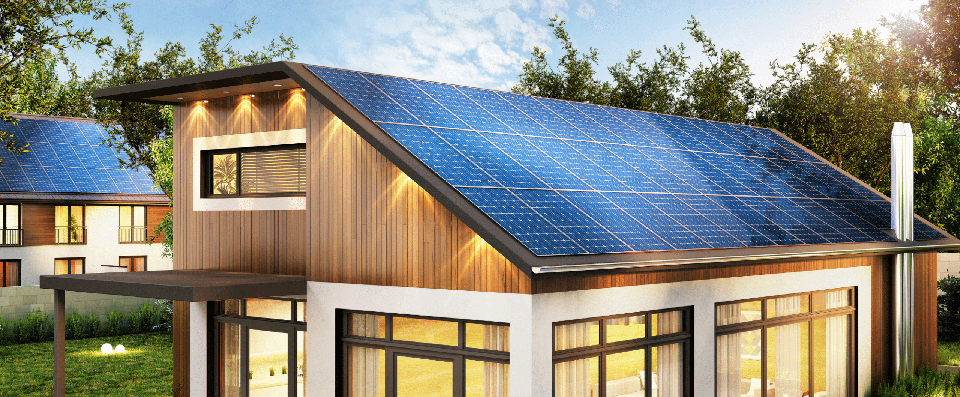
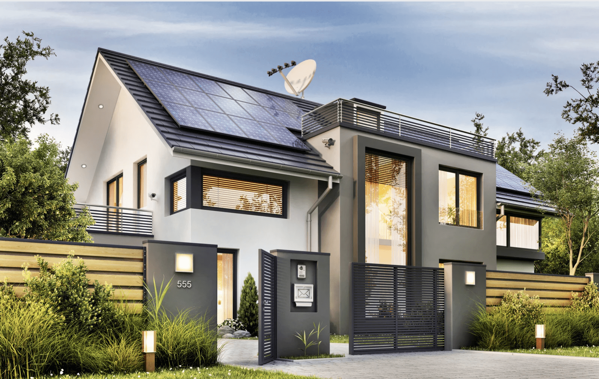
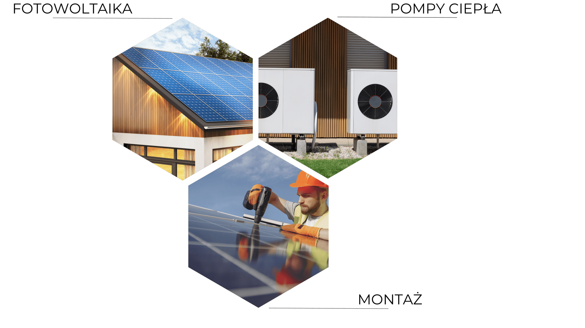
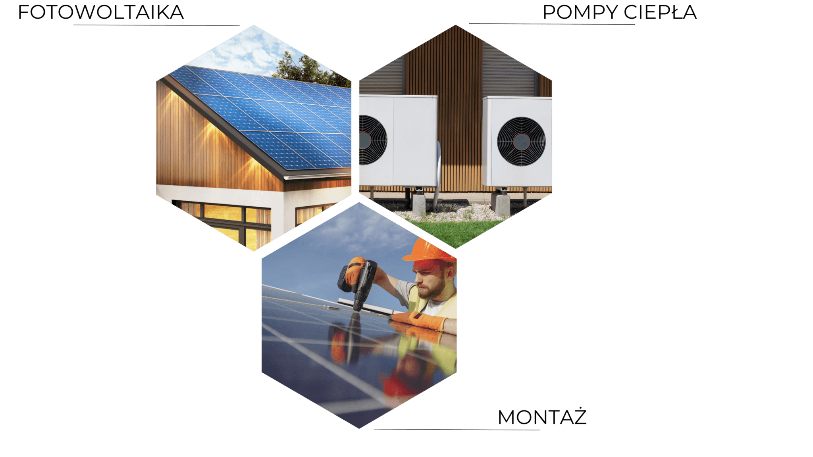

Przesun suwak w lewo i w prawo. Po prawej jest wersja "na telefon" - najmocniej zmniejszona, wiec jesli tu nie widac roznicy, w zestawie A tym bardziej jej nie bedzie.




FOTOWOLTAIKA-2 (1476 KB) i zrzut ekranu (812 KB) sa zapisane jako PNG, czyli w formacie do grafik z przezroczystoscia, nie do zdjec. Nie maja przezroczystosci, wiec ten sam obraz w pelnym rozmiarze jako JPEG wazy odpowiednio 737 KB i 363 KB - to jedna zamiana pliku i strona glowna lzejsza o ponad 1,1 MB. FOTOWOLTAIKA-1.png ma przezroczyste tlo, wiec zostaje PNG (albo WebP z przezroczystoscia - zestaw B WebP).
| plik | wymiary | dzis | A pelny | B telefon | B WebP |
|---|---|---|---|---|---|
| FOTOWOLTAIKA-2-e1701633556322.png | 2560x1058 | 1476 | 1411 | 236 | 171 |
| Zrzut-ekranu-2023-12-3-o-18.50.20.png | 1594x1012 | 812 | 782 | 319 | 198 |
| jakie-sa-rodzaje-trackerow-fotowoltaicznych-ktory-tracker-sloneczny-wybrac-do-swojej-instalacji-i-fotowoltaiki-01.webp | 2560x1920 | 748 | 748 | 184 | 161 |
| FOTOWOLTAIKA-1.png | 2560x1440 | 495 | 488 | 87 | 58 |
| jakie-sa-rodzaje-trackerow-fotowoltaicznych-ktory-tracker-sloneczny-wybrac-do-swojej-instalacji-i-fotowoltaiki-01-2048x1536.webp | 2048x1536 | 449 | 449 | 173 | 148 |
| jakie-sa-rodzaje-trackerow-fotowoltaicznych-ktory-tracker-sloneczny-wybrac-do-swojej-instalacji-i-fotowoltaiki-01-1536x1152.webp | 1536x1152 | 288 | 288 | 169 | 143 |
| FOTOWOLTAIKA-1-2048x1152.png | 2048x1152 | 269 | 269 | 75 | 56 |
| dom-1.webp | 1920x1080 | 214 | 214 | 104 | 81 |
| dom-1-1536x864.webp | 1536x864 | 198 | 198 | 98 | 74 |
| FOTOWOLTAIKA-1-1536x864.png | 1536x864 | 156 | 156 | 73 | 53 |
| jakie-sa-rodzaje-trackerow-fotowoltaicznych-ktory-tracker-sloneczny-wybrac-do-swojej-instalacji-i-fotowoltaiki-01-1024x768.webp | 1024x768 | 132 | 132 | 132 | 135 |
| dom-1-1024x576.webp | 1024x576 | 106 | 103 | 93 | 66 |
| jakie-sa-rodzaje-trackerow-fotowoltaicznych-ktory-tracker-sloneczny-wybrac-do-swojej-instalacji-i-fotowoltaiki-01-768x576.webp | 768x576 | 79 | 79 | 79 | 80 |
| FOTOWOLTAIKA-1-1024x576.png | 1024x576 | 77 | 77 | 70 | 52 |
| grafika.png | 1366x768 | 68 | 68 | 38 | 36 |
| dom-1-768x432.webp | 768x432 | 67 | 61 | 61 | 46 |
| webpc-passthru-scaled.webp | 2560x500 | 51 | 43 | 14 | 6 |
| FOTOWOLTAIKA-1-768x432.png | 768x432 | 47 | 47 | 47 | 37 |
| pompa-ciepla-powietrzna-czy-gruntowa-jaka-pompe-ciepla-wybrac-do-nowego-domu.webp | 768x563 | 43 | 43 | 43 | 43 |
| webpc-passthru-2048x400.webp | 2048x400 | 41 | 32 | 14 | 6 |
| York-Logo.png | 2336x531 | 40 | 39 | 10 | 18 |
| Projekt-bez-nazwy-37-e1701631678485.jpg | 750x558 | 37 | 37 | 37 | 32 |
| York-Logo-2048x466.png | 2048x466 | 31 | 30 | 10 | 22 |
| webpc-passthru-1536x300.webp | 1536x300 | 29 | 23 | 14 | 6 |
| logo.jpg | 1539x550 | 28 | 28 | 20 | 9 |
| magazyn-energii-bez-pradu-czy-zasila-dom-w-czasie-awarii-sieci.webp | 1024x576 | 23 | 23 | 23 | 24 |
| York-Logo-1536x349.png | 1536x349 | 22 | 22 | 11 | 22 |
| webpc-passthru-1024x200.webp | 1024x200 | 19 | 15 | 14 | 6 |
| logo-1536x549.jpg | 1536x549 | 18 | 18 | 18 | 13 |
| DAIKIN_logo.svg-1536x333.png | 1536x333 | 17 | 17 | 9 | 14 |
| DAIKIN_logo.svg-2048x444.png | 2048x444 | 17 | 17 | 6 | 13 |
| jakie-sa-rodzaje-trackerow-fotowoltaicznych-ktory-tracker-sloneczny-wybrac-do-swojej-instalacji-i-fotowoltaiki-01-300x225.webp | 300x225 | 17 | 17 | 17 | 14 |
| Panasonic_logo_Blue.svg.png | 2560x406 | 16 | 16 | 5 | 9 |
| Panasonic_logo_Blue.svg-2048x325.png | 2048x325 | 16 | 16 | 6 | 11 |
| 8575458fb40664ec644b56be5c7ef03d.3dd3.png | 80x80 | 15 | 15 | 15 | 4 |
| dom-1-300x169.webp | 300x169 | 15 | 13 | 13 | 10 |
| webpc-passthru-768x150.webp | 768x150 | 14 | 11 | 11 | 5 |
| DAIKIN_logo.svg.png | 2560x555 | 14 | 14 | 4 | 10 |
| York-Logo-1024x233.png | 1024x233 | 13 | 13 | 12 | 25 |
| Panasonic_logo_Blue.svg-1536x244.png | 1536x244 | 13 | 12 | 6 | 12 |
| logo-1024x366.jpg | 1024x366 | 11 | 11 | 11 | 9 |
| 14a66b03e3b36da2039d08ea5ed3a482.2c73.png | 80x80 | 11 | 11 | 11 | 3 |
| FOTOWOLTAIKA-1-300x169.png | 300x169 | 10 | 10 | 10 | 10 |
| Projekt-bez-nazwy-37-e1701631678485-300x223.jpg | 300x223 | 10 | 10 | 10 | 7 |
| York-Logo-768x175.png | 768x175 | 10 | 10 | 10 | 18 |
| logo-768x274.jpg | 768x274 | 9 | 9 | 9 | 7 |
| Panasonic_logo_Blue.svg-1024x162.png | 1024x162 | 8 | 8 | 8 | 13 |
| magazyn-energii-bez-pradu-czy-zasila-dom-w-czasie-awarii-sieci-768x432.webp | 768x432 | 8 | 8 | 8 | 8 |
| DAIKIN_logo.svg-1024x222.png | 1024x222 | 7 | 7 | 7 | 14 |
| pompa-ciepla-powietrzna-czy-gruntowa-jaka-pompe-ciepla-wybrac-do-nowego-domu-300x220.webp | 300x220 | 6 | 6 | 6 | 6 |
| Panasonic_logo_Blue.svg-768x122.png | 768x122 | 6 | 6 | 6 | 10 |
| webpc-passthru-300x59.webp | 300x59 | 6 | 4 | 4 | 2 |
| DAIKIN_logo.svg-768x167.png | 768x167 | 6 | 6 | 6 | 12 |
| Mitsubishi_logo.svg-768x660.png | 768x660 | 6 | 6 | 6 | 10 |
| adba6c39ae5cdba37eb4a00543596e4c.16cb.png | 160x160 | 6 | 3 | 3 | 2 |
| logo-300x107.jpg | 300x107 | 6 | 6 | 6 | 3 |
| favicon.png | 96x96 | 5 | 5 | 5 | 3 |
| razem | 6363 | 6210 | 2494 | 2066 |